Activation functions. See also specific functions
backpropagation and, 127
common characteristics, 79
defined, 251
derivative plot, 220
element-wise application, 96
history of, 158
necessity of, 77–80, 82
neural network, 62
neuron, 70–79, 127, 150–151
φ notation, 96
shape of, 76, 79
weight adjustments, 207
Activation space, 59–61
Adaptive linear neuron (ADALINE) network, 116–117
Aizenberg, I. N., 143
AlexNet, 102, 138, 169–170, 233
Algorithms, 7–8. See also Backpropagation algorithm; Gradient descent algorithm; Least mean squares (LSM) algorithm; Machine learning (ML) algorithm
AlphaGo (Deep Mind), 2, 4
AND function, 119–119, 133
Artificial intelligence
background, 4, 6–8
challenges, 246
defined, 251
machine learning and, 4, 6
relationships, 6, 10
Assumptions, encoded, 18, 21
Attribution, 247
Autoencoders, 144, 145–148
Axon, 65–66
Backpropagation
in deep learning history, 102, 125–129
defined, 251
error gradients, 150–151
learning rule, 210
meanings of, 209–210
ReLUs, 152
RNNs, 175–176
training neural networks, 138, 209–210
the δ s, 216–222
Backpropagation algorithm
background, 125–126
backward pass, 126, 211–213, 215
blame assignment, 126, 213–214
credit assignment problem, solving the, 125, 186, 209–210
described, 209–210
error gradients, 211–213
error propagation, 128–129
forward pass, 126, 211, 214
iteration steps, 213–214
threshold activation function in, 127
training function, 127, 186
two-stage, 126, 210–215
weight adjustments, 126–127, 222–230
Backward pass, 126, 211–213, 215
Baidu, 1
Bengio, Yoshua, 231
Bias
in artificial neurons, 88
inductive, 17–22
permissive, 20
preference, 19–20
restriction, 19
Bias term, 88–92
Bidirectional Encoder Representations from Transformers (BERT) model, 240
Big data
deep learning’s impact on, 35
driving algorithmic innovation, 232–237
emergence of, 23
Biological neurons, 241
Blame assignment, 123, 126, 213–214
BMI example, 32
Box, George, 40
Brain, human, 65–67, 238
Candidate functions, 25–26, 28
Capsule networks, 237–239
Cars, self-driving, 1
Cells, LSTM, 177–178, 180
Chain rule, 128
Chellapilla, K., 154
Chess, 2–4
Churchland, P. M., 140
Civil liberties, 37, 245
Complex cells, 135–136
Complex models, 62
Computer games. See Game playing
Computer power, growth of, 153–155
Compute unified device architecture (CUDA), 154
Connectionism, 124, 129–141, 156–157
Connection weights, 70
Consumer devices, 37
Convolutional layer, 168–170
Convolutional neural network (CNN)
architecture, 182
convolution operation, 165
in deep learning history, 133–143
defined, 252
design goal, 160
feature maps, 165–166, 168
functions, 160
kernels, 165, 168–169
limitations, 237–238
output, 165
pooling function, 166, 168–170, 238–239
processing stages, 163–164, 168
receptive field, 162–166
training, 153
translation invariance, 161–163
visual feature detection, 160–163, 168–170
Convolutional neural network (CNN) models
pooling function, 238–239
transfer learning, 236–237
visual feature detection, 236, 238
Convolution mask, 165
Credit assignment problem, defined, 123
Credit assignment problem, solving the. See also Loan decision model
algorithms in, 7
backpropagation algorithm, 125, 186, 209–210
dataset example, 6, 7, 27, 49, 51, 53
functions in the, 8, 10
modeling, 27, 46, 48–55, 73
weight adjustments, 51, 71, 210–211
Cybernetics, 102
Data
analyzing for customer segmentation, 28
clustering, 28–29
extracting accurate functions from, 14
learning patterns from, algorithm for, 185
neural network training on, 122, 185
noise in, 16, 20
overfitting/underfitting, 20, 22
personal, protections for, 37, 245–246
underfitting, 77–78
Data annotation costs, 233
Data-driven decisions, enabling, 3
Data labeling bottleneck, 144, 236
Dataset analysis algorithms, 7–8
Dataset design, 25, 32, 34–35
Datasets
annotated, 233–235
credit assignment problem, solving the, 6, 7, 27, 49, 51, 53
defined, 252
error of a model on, 190–191
feature selection, tradeoffs in, 24–25
growth, 241, 248
high-dimensional, 35
historic, creating, 30
large, 22–23, 35
in machine learning, 6–7
modeling, 194–196
parameters, modifying to fit the model, 49–54
simplest form, 6–7, 24, 26
single input-output, 187–188
Dataset sizes, increases in, 153–155, 233–235
Dechter, Rina, 143
Decision boundaries, two-input neurons, 84–91
Decision-making
automated, GDPR rights, 245–246
data-driven, 1, 3, 4–5
intuitive, 4, 22
Decision space, 59–60. See also Activation space
Decoder, 142, 182–183
DeepBlue, 3
DeepFace, 23
Deep fakes, 235–236
Deep learning
benefits, 248–250
data-driven decision making, 1, 3, 4–5
defined, 252
development drivers, 232
emergence of, 23
era of, 143–144
examples, 1–2
power of, 183
relationships, 6, 10
success, factors in, 32–35
summary overview, 36–37
Deep learning (cont.)
term use, 143
usefulness, 4, 248
users of, 1–2
Deep learning, future of
big data driving algorithmic innovation, 232–237
interpretability, challenge of, 244–248
new hardware, 240–244
new models, emergence of, 237–240
summary overview, 248, 250
Deep learning, history of
backpropagation, 103, 125–129
CNNs, 102
computer power, growth of, 153–155
connectionism, 124, 129–133
dataset sizes, increases in, 153–155
deep learning era, 103, 143–144
Elman network, 103, 139–140
Glorot initialization, 103, 148, 150
GPUs, 103, 153
Hebb’s postulate, 103, 104–105
layer-wise pretraining, 103
layer-wise pretraining using autoencoders, 145–148
LMS algorithm, 103, 123
local vs. distributed representations, 129–133
LSTM algorithm, 103, 113–116
McCulloch & Pitts model, 103, 104
neocognitron, 103
network architectures, 133–143, 173
perceptrons, multilayer, 124
perceptron training model, 103, 105–113, 116
periods in, 101
ReLU activation functions, 148, 150–152
RNNs, 103, 133–143, 173
seq2seq, 103, 142
summary overview, 155–158
themes within, 101–102
threshold logic units, 103, 104–105
timeline, 103
vanishing gradients, 103, 125–129
virtuous cycle, 153–155
weight initialization, 148, 150–152
XOR problem, 103, 116–123
Deep learning architectures. See Capsule network; Convolutional neural network (CNN); Generative adversarial network (GAN); Long short-term memory (LSTM) network; Recurrent neural network (RNN); Transformer model
Deep learning-GPU relation, 97
Deep learning models
feature learning function, 36–37
new, emergence of, 237–240
training, 31
usefulness, 156
Deep learning networks
components, 68
defined, 39, 68
neuron hidden layers in, 67–68summary overview, 98–100
training, 97, 127–129, 147, 150, 170
DeepMind, 2, 31
Delta rule, 114, 204
δ s, backpropagating the, 216–222
Dendrite, 65–66
Dense layer, 169–170
Dimensionality reduction, 247
Discriminative models, 235
distributed representation, 129–132, 142, 243
Divide-and conquer strategy, 10, 79–82
DNA sequencing, 248
Dot product operation, 87–88
Earth orbit telescopes, 248
Elman, Jeffrey Locke, 139–140
Elman network, 103, 139–141
Elo rating, 3
Encoder, 142, 182–183
Encoder-decoder architecture, 182–183, 244
Error, calculating, 190–191
Error curves, 197–198
Error gradients, 211–211
Error signals, 128–129
Error surface, 192, 193, 194–196, 198
Ethics regulation, 245
Facebook, 1, 23, 156
Face recognition
CNNs for, 160–163, 168–169, 238
spatially invariant, 136
transfer learning for, 236
Face recognition function, 15
Face-recognition software, 23, 35, 156
Feature map, 165–166, 168
Feature selection, 32
Feature vector, 622
Feature visualization, 246–248
Feedforward network
defined, 252
dense layer, 168–169
fully connected, 133–134, 169
neuron inputs and outputs, 92
standard, 92, 169
training, 134, 151
Filter vector, 179
Fitness functions, 26–27
Forget gate, 177–178
Forward pass, 126, 211, 214
Fukushima, Kunihiko, 136–137
Fully connected networks, 133–134
Functions. See also specific functions
defined, 4, 14, 252
encoded, 12
equation of a line to define a, 18
examples, 15, 21
if-then-else rules, 19
in machine learning, 7–8
mathematical model vs., 40
models vs., 13
nonlinear as activation function, 77
partial derivatives, 199–200
rate of change, 199
representing, 8
simpler, 19
template structure defining, 18–19
Game playing, 2–4, 29, 31
Gates, LSTM networks, 177–178
Gene prediction function, 15
General Data Protection Regulations (GDPR), 245–246
Generative adversarial networks (GANs), 235
Generative models, 235
Geometric spaces, 59–63
Glorot, X., 148
Glorot initialization, 103, 148, 150
Go, 2–4
Google, 1, 30, 156
Gradient descent, 260
Gradient descent algorithm
components, 197
defined, 252
descending error surfaces, 203, 205–206
error curves, 197–198, 205–206
goal of, 197
hiker example, 196–197
initial model, creating, 194, 196
simplifying factors, 200
summary, 204–205
training function, 185–186, 208
weight updates, 51, 53–56, 197–208
Graphical processing unit (GPU)
accelerating training, 92–98
adoption of, 240–241
in deep learning history, 103, 153–154
defined, 253
manufacturing, 98
Greedy layer-wise pretraining, 144, 147
Group method for data handling (GMDH) network, 103, 122
Handwritten digit recognition, 160, 239
Happiness-income example, 41–43
Hardware energy costs, 241
Healthcare sector, 1
Hebb, Donald O., 104–105
Hebb’s postulate, 103, 104–105
Hiker example of gradient descent, 196–197
Hinge activation function, 73
Hinton, Geoffrey E., 125, 144, 231, 235
Hochreiter, Sepp, 128, 141
Hoff, Marcian, 113–114, 116
Hopfield, John, 124
Hopfield network, 103, 124–125
Hubel, D. H., 134–137
Human Brain Project, 243
Hyperparameter, 80, 100
IBM, 244
If-then-else rules, 19
ill-posed problem, 16–17
Image captioning systems, automatic, 182
Image map, 170
ImageNet, 233, 236–237
ImageNet Large-Scale Visual recognition Challenge (ILSVRC), 138, 169–170, 233
Image processing, 134–138, 236–237. See also Face recognition
Image recognition, 136
Income-happiness relation, 41–43
Inductive bias, 17–22
Inference, 12, 14–15, 20, 29
Information flows
interpreting, 247
neural networks, 68, 70
RNNs, 139, 171, 173
Information processing
neurons, artificial, 70–77
understanding, 246–247
Input gate, 177–178
Input-output mapping, 10–11
Input space
loan decision model, 57–58, 83–84
two-input neurons, 84, 85, 86
Input vector, 62
Intel Labs, 244
Intercept, 43, 46, 188–189
Interpretability, challenge of, 244–248
Intuition, 4, 22
Ivakhenko, Alexey, 122
Jung, K., 153
Kasparov, Gary, 3
Ke Jie, 2
Kernels, 165, 168–169
Language processing, 142, 240
Large Hadron Collider, 248
Layer-wise pretraining, 103, 144–148
Learning. See specific types of
Learning rate (ƞ), 110–112, 204
Least mean squares (LSM) algorithm, 103, 113–116, 123, 185, 204
Least mean squares (LSM) rule, 123
LeCun, Yann, 138, 161, 166, 231
Line
best fit, 187
equation of a, 18, 41–43, 188–190
intercept-slope changing a, 189–190
mapping function, 187–189
Linear activation function. See also Rectified linear activation function
in deep learning history, 73
equation of a line representing, 188–189
Linearly separable functions, 117–119
Linear models
combining, 54–57, 62
credit solvency example, 44–48, 49, 54–60, 62–63
error variation, 192, 193, 194
income-happiness relation, 41–43
learning weights in, 49–54
modeling nonlinear relations, 77–78
with multiple inputs, 44–46
parameter setting, 46, 48–49, 61–62
summary overview, 61–63
templates, 41–44
Loan decision model. See also Credit assignment problem
coordinate spaces, 59
dataset example, 6, 7
input space, 57–58, 83–84
two-input, 83–84
weights, adjusting, 84, 107–108
Localist representation, 129, 131–132, 243
“Logical Calculus of the Ideas Immanent in Nervous Activity, A” (McCulloch & Pitts), 104
Logistic activation function, 152
Logistic units, 75, 80, 235
Loihi chip, 247
Long short-term memory (LSTM), 103, 141–142, 253
Long short-term memory (LSTM) network cells, 177–178, 180
Long short-term memory (LSTM) networks, 177–178, 181–183
MacHack-6 (MIT), 3
Machine learning (ML)
artificial intelligence and, 4, 6
benefits, 248–250
defined, 253
difficulty factors in, 16–17
feature selection and design, 32, 34
functions, 10–11
goal of, 8
reinforcement, 29–31
relationships, 6, 10
in situ, 30
summary overview, 36–37
supervised, 27–31
training model, 12–14
understanding, 6–9, 10–11
Machine learning (ML) algorithm
assumptions, 18, 21
bias in, 17–22
defined, 10, 253
ill-posed problems, solving, 17
sources of information to select the best function, 17–18
success criterion, 21–22
template structure defining, 18–19
Machine learning (ML) models, 28–30, 143
Machine learning (ML) success factors
candidate functions, 23, 25–26, 28
data, 23–25
fitness functions, 26–27
fitness measures, 24
Machine translation, 15, 35, 142, 181–182
Mapping
deterministic, 7
nonlinear, 76, 78, 79
Mathematical model, 40
Matrix multiplication, 72
max pooling, 166
McCulloch, Walter, 103–104
Mead, Carver, 241
Medical images, synthesizing, 235
Memory. See also Long short-term memory (LSTM)
associative, 148–125
forward pass stored in, 211
RNN, 139, 170–177
Microsoft, 1
Microsoft Research, 170
Mikolov, Tomas, 181
Minsky, Marvin, 116–120, 122
MIT, 3
MNIST handwritten digit recognition dataset, 239
Mobile phones, 1
Model parameters, 48–54, 9
Models
complex, 56, 62
defined, 12, 253
equation of a line defining, 41–44
fixed, 14
functions vs., 13
geometric spaces, 57–61
real-world correspondence, 40–41
templates, 40–43
training, 12–14
usefulness, 40
variables in, 40–41
Natural language processing (NLP), 181–182
Neocognitron, 103, 136
Network architectures
convolutional neural, 133–143
in deep learning history, 133–143
encoder-decoder, 240
recurrent neural, 133–143
Network error, 210–213, 222–225
Neural machine translation, 156
Neural network
activation function, 62
artificial, 67–68, 70
compositional nature, 99
connection weights, 70
defined, 65, 262
depth, 97
designing, 157–158
functions, 78–79
geometric spaces, 57–61
graphic representation, 95, 96
human brain, analogy to the, 67
information flows, 68, 70
learning functions, 10
learning nonlinear mapping, 79
matrix representation, 95, 96, 98
modeling relationships, 78–79
neurons in complex models, 56–57
parameters, 82–83, 99–100
power of, 67, 79
schematic, 10
simple, topological illustration, 68
size, growth in, 97–98
structure, 8–9, 67–68
tailoring, 152
weighted sum calculations, 80–82
Neural network model
bias in, 22
data, overfitting vs. underfitting, 22
datasets, suitability to large, 22–23
function, 13, 185
training, 23, 80, 185
Neural network training
accelerating using GPUs, 92–98
backpropagation for, 209–210
on data, 122, 193
deep neural networks, 127–128, 185–186
hardware to speed up, 153–154
with multiple layers, 120, 208
Neural network training model, 23, 82, 185
Neuromorphic computing, 241–244, 254
Neurons
activation function, 61–62, 71–77, 127
artificial, 70–77, 91
changing parameters effect on behavior, 82–91
defined, 76, 254
feedforward network, 92
function, 8, 56
hidden layers, 69
human brain, 65–67
information processing, 70
input-output mapping, 8, 70–71
parameters, 82
receptive fields, 134–137, 162
sensing, 68, 70
sequence of operations, 71–77
Neurons (cont.)
structure, 65–66
threshold functions, 62
weight-output relation, 82
Neurons, two-input
decision boundaries, 84, 85, 90, 91
input space, 84, 85, 86
loan decision model equivalence, 84
Nilsson, N. J., 102
Noise in data, 20
Nonlinear activation function, 165
Nonlinear models, 77–78
NVIDIA, 154
Oh, K.-S., 153
Olah, Chis, 246
Optimization algorithm, 197
OR function, 117–118, 133
Organization of Behavior, The (Hebb), 104
Output gate, 177–178
Output vector, 180–181
Overfitting, 20, 22, 254
Parallel Distributed Processing (PDP), 125 120–124, 126
Papert, Seymour, 117, 119–122
Perceptron
in deep learning history, 103
multilayer, 124
single layer, limitations of, 117, 119, 122–123
Perceptron convergence theorem, 112
Perceptron learning rule, 185
Perceptrons (Minsky & Papert), 116–117
Perceptron training model, 105–113, 116
Permissive bias, 20
Personal data protections, 245
φ symbol, 72, 94
Picasso problem, 237–238
Pitts, Walter, 103–105
Planar models, 44
Pooling function, 166, 168–172, 238–239
Positive linear activation function, 73
Preference bias, 19–20
Pretraining, term use, 146
Privacy rights, 37, 245
Problems, ill-posed, 16–17
Problem solving, neural networks, 79
PyTorch, 241
Quantum computing, 244
Qubit, 244
Quetelet, Adolphe, 33
Reasoning, inductive, 17
Receptive field, 134–137, 162–168
Recital 69, 245
Rectified linear activation function, 73, 74, 165–166
Rectified linear units (ReLUs), 80, 255
Rectifier activation function, 79, 80
Recurrent neural network (RNN)
constructing a, 180
in deep learning history, 133–143
defined, 254
depth, 171–172
functions, 170
hidden layers, 170–177
information flows, 171, 173
layer connections, 175–176
memory buffer, 170–177
structure, 173
unrolled through time, 174
vanishing gradient problem in, 141, 175
Reinforcement learning, 29–31, 254
Representation learning, 132
Representations, localist vs. distributed, 129–133
ResNet, 170, 233, 237
Restriction bias, 19
Robot control, 30
Rosenblatt, Frank, 106–113, 116
Rumelhart, D. E., 125
Saliency, 247
Schmidhuber, Jürgen, 127, 141
Sedol, Lee, 2
Sentence generation, 139–140, 181–182
seq2seq, 103, 181
seq2seq architecture, 142
Sequential data, 170
Simple cells, 135–136
Simplicity, 19
Skip-connections, 170
Slope parameter, 43, 188–189
Spam filtering, 15, 21
Speech recognition, 1, 15
Spiking neurons, 241–242
Steinkraus, D., 154
∑ symbol, 45, 72
Sum of squared errors (SSE), 190–192, 193, 194–203
Supervised learning, 27–30, 232–233, 255
Support vector machines (SVMs), 143
Tangle Lake chip, 244
Tanh activation function, 73, 74, 76, 79, 127, 150–151
Tanh layer, 180
Tan units, 179–180
Target attributes, 27–28, 255
Templates, 18–19
TensorFlow, 241
Threshold activation function, 73–75, 78–80, 83, 127
Threshold logic units, 103–105
Training model, 12–14, 31, 82
Transfer learning, 236–237
Transformer model, 239–240
TrueNorth chip (IBM), 243–244
T-SNE, 248
Tuning phase, 145–147
Two-input neurons. See Neurons, two-input
Two-stage backpropagation algorithm, 126, 210–215
Underfitting, 22, 77–78, 255
Units, 79. See also Neurons
Unsupervised learning, 28–30, 233, 237, 255
Update vector, 179
Vanishing gradient problem
in deep learning history, 103, 125–129, 143
defined, 129, 255
Elman network, 139
LSTM networks, 177
overcoming the, 147–148
in RNNs, 141, 176
Variables in models, 40–41
Vectors, 62, 86–88
Very-large-scale integrated (VLSI) circuit, 241
Virtuous cycle, 153–155
Visual cortex experiments, 134–136
Visual feature detection
CNNs for, 160–163, 168–169, 238
spatially invariant, 136
transfer learning for, 236
Visual feature detection function, 15, 236, 238
Visual feature detection software, 15, 23, 35, 156
Visualization techniques, 246–248
Weight adjustment
activation functions and, 207
backpropagation algorithm, 126–127, 222–230
credit assignment problem, 123, 210–211
Weight initialization, 148, 153, 155
Weighted sum, 46, 47, 48, 61–64, 71
Weighted sum calculations
bias term in, 88
neural networks, 80–82
in a neuron, 82
neuron layer, 92–97
Weighted summation function, 98
Weights
error gradients, adjusting, 209, 211
updating, 53–54
Weight space, 58–60, 192, 193, 194
Weight update rule, 197–208
Weight update strategy, 108–112
Weight vector, 86–89
Widrow, Bernard, 113–114, 116
Widrow-Hoff learning rule, 114, 204
Wiesel, T. N., 134–137
Williams, R. J., 125
word2vec models, 180–181
XOR function, 103, 119, 133
XOR problem, 103, 116–123


 is the output variable,
is the output variable,  is the input variable, and
is the input variable, and  and
and  are two parameters of the model
are two parameters of the model  and
and  . Figure 2.1 illustrates how varying the values of each of these parameters changes the relationship defined by the model between income and happiness.
. Figure 2.1 illustrates how varying the values of each of these parameters changes the relationship defined by the model between income and happiness.
 , is a model in which people with zero income have a happiness level of 1 and increased income increases happiness, but at the slower rate compared to the world modeled by the solid line. Finally,
, is a model in which people with zero income have a happiness level of 1 and increased income increases happiness, but at the slower rate compared to the world modeled by the solid line. Finally,  is set to. This is why the
is set to. This is why the  parameter in a linear model is known as the intercept. The intercept can be understood as specifying the value of the output variable when the input variable is zero. Changing the
parameter in a linear model is known as the intercept. The intercept can be understood as specifying the value of the output variable when the input variable is zero. Changing the  parameter changes the angle (or slope) of the line. The slope parameter controls how quickly changes in income effect changes in happiness. In a sense, the slope value is a measure of how important income is to happiness. If income is very important (i.e., if small changes in income result in big changes in happiness), then the slope parameter of our model should be set to a large value. Another way of understanding this is to think of a slope parameter of a linear model as describing the importance, or weight, of the input variable in determining the value of the output.
parameter changes the angle (or slope) of the line. The slope parameter controls how quickly changes in income effect changes in happiness. In a sense, the slope value is a measure of how important income is to happiness. If income is very important (i.e., if small changes in income result in big changes in happiness), then the slope parameter of our model should be set to a large value. Another way of understanding this is to think of a slope parameter of a linear model as describing the importance, or weight, of the input variable in determining the value of the output.
 parameter has been replaced by a separate weight for each input variable, with each weight representing the importance of its associated input in determining the output. In mathematical notation this model would be written as:
parameter has been replaced by a separate weight for each input variable, with each weight representing the importance of its associated input in determining the output. In mathematical notation this model would be written as:
 represents the credit solvency output, 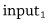 represents the income variable,
represents the credit solvency output, 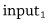 represents the income variable,  represents the debt variable, and
represents the debt variable, and  represents the intercept. Using the idea of adding a new weight for each new input to the model allows us to scale the equation of a line to as many inputs as we like. All the models defined in this way are still linear within the dimensions defined by the number of inputs and the output. What this means is that a linear model with two inputs and one output defines a flat plane rather than a line because that is what a two-dimensional line that has been extruded to three dimensions looks like.
represents the intercept. Using the idea of adding a new weight for each new input to the model allows us to scale the equation of a line to as many inputs as we like. All the models defined in this way are still linear within the dimensions defined by the number of inputs and the output. What this means is that a linear model with two inputs and one output defines a flat plane rather than a line because that is what a two-dimensional line that has been extruded to three dimensions looks like. we must first go through all
we must first go through all  inputs and multiple each input by its corresponding weight, then we should sum together the results of these
inputs and multiple each input by its corresponding weight, then we should sum together the results of these  multiplications, and finally we add the
multiplications, and finally we add the  intercept parameter to the result of the summation. The
intercept parameter to the result of the summation. The  symbol tells us that we use addition to combine the results of the multiplications, and the index
symbol tells us that we use addition to combine the results of the multiplications, and the index 
 that is always equal to 1 and to treat the intercept as the weight on this input, that is, 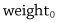. Doing this allows us to write out the model as follows:
that is always equal to 1 and to treat the intercept as the weight on this input, that is, 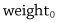. Doing this allows us to write out the model as follows:
 , and we have relabeled the intercept
, and we have relabeled the intercept  .
.


 is highlighted in this figure. Each point within this coordinate system describes a possible set of weights for the model, and therefore corresponds to a different weighted sum function within the model. Consequently, moving from one location to another within this weight space is equivalent to changing the model because it changes the mapping from inputs to output that the model defines.
is highlighted in this figure. Each point within this coordinate system describes a possible set of weights for the model, and therefore corresponds to a different weighted sum function within the model. Consequently, moving from one location to another within this weight space is equivalent to changing the model because it changes the mapping from inputs to output that the model defines.
 on n different input connections, and each connection has an associated weight
on n different input connections, and each connection has an associated weight  . The weighted sum calculation involves the multiplication of inputs by weights and the summation of the resulting values. Mathematically this calculation is written as:
. The weighted sum calculation involves the multiplication of inputs by weights and the summation of the resulting values. Mathematically this calculation is written as:
 and had the following weights 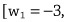
and had the following weights 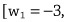  , the weighted sum calculation would be:
, the weighted sum calculation would be:


 . Figure 3.4 (middle plot, solid line) plots the logistic function. Assuming that the neuron is using a logistic activation function, this plot shows how the result of the summation will be mapped to an output activation: 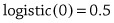. The calculation of the output activation of this neuron can be summarized as:
. Figure 3.4 (middle plot, solid line) plots the logistic function. Assuming that the neuron is using a logistic activation function, this plot shows how the result of the summation will be mapped to an output activation: 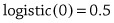. The calculation of the output activation of this neuron can be summarized as:

 , will either be passed as input to one or more neurons in the next layer in the network, or will be part of the overall output of the network. If a neuron is at the output layer, the interpretation of what its output value means would be dependent on the task that the neuron is designed to model. If a neuron is in one of the hidden layers of the network, then it may not be possible to put a meaningful interpretation on the output of the neuron apart from the general interpretation that it represents some sort of derived feature (similar to the BMI feature we discussed in chapter 1) that the network has found useful in generating its outputs. We will return to the challenge of interpreting the meaning of activations within a neural network in chapter 7.
, will either be passed as input to one or more neurons in the next layer in the network, or will be part of the overall output of the network. If a neuron is at the output layer, the interpretation of what its output value means would be dependent on the task that the neuron is designed to model. If a neuron is in one of the hidden layers of the network, then it may not be possible to put a meaningful interpretation on the output of the neuron apart from the general interpretation that it represents some sort of derived feature (similar to the BMI feature we discussed in chapter 1) that the network has found useful in generating its outputs. We will return to the challenge of interpreting the meaning of activations within a neural network in chapter 7. :
:
 ), and, consequently, the bias term is specified by
), and, consequently, the bias term is specified by  ).
). .
. goes from 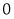 to 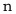, so that it now includes the fixed input, 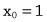, and the bias term,
goes from 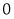 to 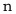, so that it now includes the fixed input, 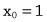, and the bias term,  ; in the earlier version of this equation, the index only went from
; in the earlier version of this equation, the index only went from  to
to  . This new format means that the neuron is able to learn the bias term, simply by learning the appropriate weight
. This new format means that the neuron is able to learn the bias term, simply by learning the appropriate weight  , using the same process
, using the same process 
 vector of activations from layer 1 by the
vector of activations from layer 1 by the  weight matrix results in a
weight matrix results in a  vector corresponding to the weighted summations for the four neurons in layer 2 of the network: 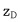 is the weighted sum of inputs for neuron D,
vector corresponding to the weighted summations for the four neurons in layer 2 of the network: 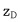 is the weighted sum of inputs for neuron D,  for neuron E, and so on.
for neuron E, and so on. vector containing the weighted summations for the neurons in layer 2, the activation vector is multiplied by each column in the matrix in turn. This is done by multiplying the first (leftmost) element in the vector by the first (topmost) element in the column, then multiplying the second element in the vector by the element in the second row in the column, and so on, until each element in the vector has been multiplied by its
vector containing the weighted summations for the neurons in layer 2, the activation vector is multiplied by each column in the matrix in turn. This is done by multiplying the first (leftmost) element in the vector by the first (topmost) element in the column, then multiplying the second element in the vector by the element in the second row in the column, and so on, until each element in the vector has been multiplied by its  .
.
 notation represents the application of an activation function to each element in the vector created by the preceding matrix multiplication. The output of this element-wise application of the activation function is a vector containing the activations for the neurons in a layer of the network. To help show the correspondence between the two representations, both figures show the inputs to the network, 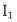 and
notation represents the application of an activation function to each element in the vector created by the preceding matrix multiplication. The output of this element-wise application of the activation function is a vector containing the activations for the neurons in a layer of the network. To help show the correspondence between the two representations, both figures show the inputs to the network, 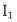 and  , the activations from the three hidden units, 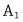,
, the activations from the three hidden units, 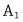,  , and
, and  , and the overall output of the network,
, and the overall output of the network,  .
.
 , and inputs for which the perceptron should produce the output 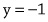 (Rosenblatt 1960). The training procedure assumes a set of Boolean encoded input patterns, each with an associated target output. At the start of training, the weights in the perceptron are initialized to random values. Training then proceeds by iterating through the training examples, and after each example has been presented to the network, the weights of the network are updated based on the error between the output generated by the perceptron and the target output specified in the data. The training examples can be presented to the network in any order and examples may be presented multiple times before training is completed. A complete training pass through the set of examples is known as an iteration, and training terminates when the perceptron correctly classifies all the examples in an iteration.
, and inputs for which the perceptron should produce the output 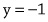 (Rosenblatt 1960). The training procedure assumes a set of Boolean encoded input patterns, each with an associated target output. At the start of training, the weights in the perceptron are initialized to random values. Training then proceeds by iterating through the training examples, and after each example has been presented to the network, the weights of the network are updated based on the error between the output generated by the perceptron and the target output specified in the data. The training examples can be presented to the network in any order and examples may be presented multiple times before training is completed. A complete training pass through the set of examples is known as an iteration, and training terminates when the perceptron correctly classifies all the examples in an iteration. (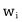) as:
(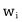) as:
 is the value of weight i after the network weights have been updated in response to the processing of example t,
is the value of weight i after the network weights have been updated in response to the processing of example t,  is the value of weight i used during the processing of example t,
is the value of weight i used during the processing of example t,  is a preset positive constant (known as the learning rate, discussed below),
is a preset positive constant (known as the learning rate, discussed below),  is the expected output for example t as specified in the training dataset,
is the expected output for example t as specified in the training dataset,  is the output generated by the perceptron for example t, and 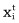 is the component of input t that was weighted by
is the output generated by the perceptron for example t, and 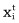 is the component of input t that was weighted by  during the processing of the example.
during the processing of the example. . The first condition is when 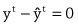; then the output of the perceptron is correct and the weights are not changed.
. The first condition is when 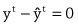; then the output of the perceptron is correct and the weights are not changed. is 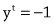 and so this condition is triggered when 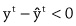. In this case, if the perceptron output for the example
is 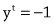 and so this condition is triggered when 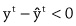. In this case, if the perceptron output for the example  is
is  , then the error term is negative (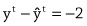) and the weight
, then the error term is negative (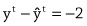) and the weight  is updated by
is updated by  . Assuming, for the purpose of this explanation, that
. Assuming, for the purpose of this explanation, that  is set to 0.5, then this weight update simplifies to . In other words, when the perceptron’s output is too large, the weight update rule subtracts the input values from the weights. This will decrease the weights on inputs with positive values for the example, and increase the weights on inputs with negative values for the example (subtracting a negative number is the same as adding a positive number).
is set to 0.5, then this weight update simplifies to . In other words, when the perceptron’s output is too large, the weight update rule subtracts the input values from the weights. This will decrease the weights on inputs with positive values for the example, and increase the weights on inputs with negative values for the example (subtracting a negative number is the same as adding a positive number). . In this case (), and the weight is updated by . Again assuming that is set to 0.5, then this update simplifies to
. In this case (), and the weight is updated by . Again assuming that is set to 0.5, then this update simplifies to  , which highlights that when the error of the perceptron is positive, the rule updates the weight by adding the input to the weight. This has the effect of decreasing the weights on inputs with negative values for the example and increasing the weight on inputs with positive values for the example.
, which highlights that when the error of the perceptron is positive, the rule updates the weight by adding the input to the weight. This has the effect of decreasing the weights on inputs with negative values for the example and increasing the weight on inputs with positive values for the example. . The purpose of the learning rate,
. The purpose of the learning rate,  , is to control the size of the adjustments that are applied to a weight. The learning rate is an example of a hyperparameter that is preset before the model is trained. There is a tradeoff in setting the learning rate:
, is to control the size of the adjustments that are applied to a weight. The learning rate is an example of a hyperparameter that is preset before the model is trained. There is a tradeoff in setting the learning rate: is replaced by the weighted sum of the inputs:
is replaced by the weighted sum of the inputs:

 ; otherwise, they output 0. Notice that the units in the hidden layer implement the logical AND and OR functions. These can be understood as intermediate steps to solving the XOR challenge. The unit in the output layer implements the XOR by composing the outputs of these hidden layers. In other words, the unit in the output layer returns TRUE only when the AND node is off (output=0) and the OR
; otherwise, they output 0. Notice that the units in the hidden layer implement the logical AND and OR functions. These can be understood as intermediate steps to solving the XOR challenge. The unit in the output layer implements the XOR by composing the outputs of these hidden layers. In other words, the unit in the output layer returns TRUE only when the AND node is off (output=0) and the OR 


 is the number of neurons in layer , and the notation w ~ U indicates that the value of w is sampled from distribution U)
is the number of neurons in layer , and the notation w ~ U indicates that the value of w is sampled from distribution U) , improved training for deep feedforward neural networks (Glorot et al. 2011). Neurons that use a rectified linear activation function are known as rectified linear units (ReLUs). One advantage of ReLUs is that the activation function is linear for the positive portion of its domain with a derivative equal to 1. This means that gradients can flow easily through ReLUs that have positive activation. However, the drawback of ReLUs is that the gradient of the function for the negative part of its domain is zero, so ReLUs do not train in this portion of the domain. Although undesirable, this is not necessarily a fatal flaw for learning because when backpropagating through a layer of ReLUs the gradients
, improved training for deep feedforward neural networks (Glorot et al. 2011). Neurons that use a rectified linear activation function are known as rectified linear units (ReLUs). One advantage of ReLUs is that the activation function is linear for the positive portion of its domain with a derivative equal to 1. This means that gradients can flow easily through ReLUs that have positive activation. However, the drawback of ReLUs is that the gradient of the function for the negative part of its domain is zero, so ReLUs do not train in this portion of the domain. Although undesirable, this is not necessarily a fatal flaw for learning because when backpropagating through a layer of ReLUs the gradients  matrix on the left of the figure represents the image that is the input to the
matrix on the left of the figure represents the image that is the input to the  matrix immediately to the right of the input represents a layer of neurons that together search the entire image for the presence of a particular local feature. Each neuron in this layer is connected to a different
matrix immediately to the right of the input represents a layer of neurons that together search the entire image for the presence of a particular local feature. Each neuron in this layer is connected to a different  receptive field (area) in the image, and they all apply the same weight matrix to their inputs:
receptive field (area) in the image, and they all apply the same weight matrix to their inputs: (top-left) in this layer is marked with the gray square covering the
(top-left) in this layer is marked with the gray square covering the  area in the top-left of the input image. The dotted arrows emerging from each of the locations in this gray area represent the inputs to neuron
area in the top-left of the input image. The dotted arrows emerging from each of the locations in this gray area represent the inputs to neuron  . The receptive field of the neighboring neuron is indicated by
. The receptive field of the neighboring neuron is indicated by  square, outlined in bold in the input image. Notice that the receptive fields of these two neurons overlap. The amount of overlap of receptive fields is controlled by a hyperparameter called the stride length. In this instance, the stride length is one, meaning that for each position moved in the layer the receptive field of the neuron is translated by the same amount on the input. If the stride length hyperparameter is increased, the amount of overlap between receptive fields is decreased.
square, outlined in bold in the input image. Notice that the receptive fields of these two neurons overlap. The amount of overlap of receptive fields is controlled by a hyperparameter called the stride length. In this instance, the stride length is one, meaning that for each position moved in the layer the receptive field of the neuron is translated by the same amount on the input. If the stride length hyperparameter is increased, the amount of overlap between receptive fields is decreased. ) are matrices of pixel values and the weights used by these neurons are also matrices. In computer vision, the matrix of weights applied to an input is known as the kernel (or convolution mask); the operation of sequentially passing a kernel across an image and within each local region, weighting each input and adding the result to its local neighbors, is known as a convolution. Notice that a convolution operation does not include a nonlinear activation function (this is applied at a later stage in processing). The kernel defines the feature detection function that all the neurons in the convolution implement. Convolving a kernel across an image is equivalent to passing a local visual feature detector across the image and recording all the locations in the image where the visual feature was present. The output from this process is a map of all the locations in the image where the relevant visual feature occurred. For this reason, the output of a convolution process is sometimes known as a feature map. As noted above, the convolution operation does not include a nonlinear activation function (it only involves a weighted summation of the inputs). Consequently, it is standard to apply a nonlinearity operation to a feature map. Frequently, this is done by applying a rectified linear function to each position in a feature map; the rectified linear activation function is defined as: . Passing a rectified linear activation function over a feature map simply changes all
) are matrices of pixel values and the weights used by these neurons are also matrices. In computer vision, the matrix of weights applied to an input is known as the kernel (or convolution mask); the operation of sequentially passing a kernel across an image and within each local region, weighting each input and adding the result to its local neighbors, is known as a convolution. Notice that a convolution operation does not include a nonlinear activation function (this is applied at a later stage in processing). The kernel defines the feature detection function that all the neurons in the convolution implement. Convolving a kernel across an image is equivalent to passing a local visual feature detector across the image and recording all the locations in the image where the visual feature was present. The output from this process is a map of all the locations in the image where the relevant visual feature occurred. For this reason, the output of a convolution process is sometimes known as a feature map. As noted above, the convolution operation does not include a nonlinear activation function (it only involves a weighted summation of the inputs). Consequently, it is standard to apply a nonlinearity operation to a feature map. Frequently, this is done by applying a rectified linear function to each position in a feature map; the rectified linear activation function is defined as: . Passing a rectified linear activation function over a feature map simply changes all 
 represent the hidden layer of the
represent the hidden layer of the  to
to  represents the connections between the input layer and the hidden layer at time step 1. Similarly, the horizontal arrows connecting the hidden layers represent the storing of the activations from a hidden state at one time step in the memory buffer (not shown) and the propagation of these activations to the hidden layer at the next time step through the connections from the memory buffer to the hidden state. At each time step, an input from the sequence is presented to the network and is fed forward to the hidden layer. The hidden layer generates a vector of activations that is passed to the output layer and is also propagated forward to the
represents the connections between the input layer and the hidden layer at time step 1. Similarly, the horizontal arrows connecting the hidden layers represent the storing of the activations from a hidden state at one time step in the memory buffer (not shown) and the propagation of these activations to the hidden layer at the next time step through the connections from the memory buffer to the hidden state. At each time step, an input from the sequence is presented to the network and is fed forward to the hidden layer. The hidden layer generates a vector of activations that is passed to the output layer and is also propagated forward to the 
 must be backpropagated through the entire network so that it can be used to update the weights on the connections from
must be backpropagated through the entire network so that it can be used to update the weights on the connections from  and
and  to
to  . This entails backpropagating the error through all the hidden layers, which in turn involves repeatedly multiplying the error by the weights on the connections feeding activations from one hidden layer forward to the next hidden layer. A particular problem with this process is that it is the same set of weights that are used on all the connections between the hidden layers: each horizontal arrow represents the same set of connections between the memory buffer and the hidden layer, and the weights on these connections are stationary through time (i.e., they don’t change from one time step to the next during the processing of a given sequence of inputs). Consequently, backpropogating an error through k time steps involves (among other multiplications) multiplying the error gradient by the same set of weights k times. This is equivalent to multiplying each error gradient by a weight raised to the power of k. If this weight is
. This entails backpropagating the error through all the hidden layers, which in turn involves repeatedly multiplying the error by the weights on the connections feeding activations from one hidden layer forward to the next hidden layer. A particular problem with this process is that it is the same set of weights that are used on all the connections between the hidden layers: each horizontal arrow represents the same set of connections between the memory buffer and the hidden layer, and the weights on these connections are stationary through time (i.e., they don’t change from one time step to the next during the processing of a given sequence of inputs). Consequently, backpropogating an error through k time steps involves (among other multiplications) multiplying the error gradient by the same set of weights k times. This is equivalent to multiplying each error gradient by a weight raised to the power of k. If this weight is  ) to right (
) to right ( ). Activations in the cell
). Activations in the cell  is first concatenated with the hidden state vector that has been propagated forward from the preceding time step
is first concatenated with the hidden state vector that has been propagated forward from the preceding time step  . Working from left to right through the processing of the gates, the forget gate takes the concatenation of the input and the hidden state and passes this vector through a layer of neurons that use a sigmoid (also known as logistic)
. Working from left to right through the processing of the gates, the forget gate takes the concatenation of the input and the hidden state and passes this vector through a layer of neurons that use a sigmoid (also known as logistic) plus hidden state is passed through a layer of sigmoid units to generate a vector of elements, the same width as the cell, where each element in the vector is in the range 0 to 1; values near 0 indicate that the corresponding cell element will not be updated, and values near 1 indicate that the corresponding cell element will be updated. At the same time that the filter vector is generated, the concatenated input and hidden state are also passed through a layer of tanh units (i.e., neurons that use the tanh activation function). Again, there is one tanh unit for each activation in the LSTM cell. This vector represents the information
plus hidden state is passed through a layer of sigmoid units to generate a vector of elements, the same width as the cell, where each element in the vector is in the range 0 to 1; values near 0 indicate that the corresponding cell element will not be updated, and values near 1 indicate that the corresponding cell element will be updated. At the same time that the filter vector is generated, the concatenated input and hidden state are also passed through a layer of tanh units (i.e., neurons that use the tanh activation function). Again, there is one tanh unit for each activation in the LSTM cell. This vector represents the information 
 represents a layer of neurons with tanh activations,
represents a layer of neurons with tanh activations,  is a special end of sentence symbol. As each word is entered, the encoder updates the hidden state and propagates it forward to the next time step. The hidden state generated by the encoder in response to the symbol is taken to be a vector representation of the input sentence. This vector is passed as the initial input to the decoder LSTM. The decoder is trained to output the translation sentence word by word, and after each word has been generated, this word is fed back into the system as the input for the next time step. In a
is a special end of sentence symbol. As each word is entered, the encoder updates the hidden state and propagates it forward to the next time step. The hidden state generated by the encoder in response to the symbol is taken to be a vector representation of the input sentence. This vector is passed as the initial input to the decoder LSTM. The decoder is trained to output the translation sentence word by word, and after each word has been generated, this word is fed back into the system as the input for the next time step. In a  symbol.
symbol.


 is the slope of the line, and
is the slope of the line, and  is the y-intercept, which specifies where the line crosses the y-axis. For the
is the y-intercept, which specifies where the line crosses the y-axis. For the  and ; this is why the function returns the value
and ; this is why the function returns the value  when
when  , as in the following:
, as in the following:
 are the parameters of this model, and these parameters can be varied to fit the model to the data.
are the parameters of this model, and these parameters can be varied to fit the model to the data. :
: vertically translates the line, whereas modifying the slope
vertically translates the line, whereas modifying the slope  rotates the line around the point .
rotates the line around the point . , and each function will have
, and each function will have 
 examples in the dataset the error of the model by subtracting the prediction of the target value returned by the model from the correct target value for that example, as specified in the dataset. In this equation
examples in the dataset the error of the model by subtracting the prediction of the target value returned by the model from the correct target value for that example, as specified in the dataset. In this equation  is the correct output value for target feature listed in the dataset for example j, and is the estimate of the target value returned by the model for the same example. Each of these errors is then squared and these squared errors are then summed. Squaring the errors ensures that they are all positive, and therefore in the summation the errors for examples where the function underestimated the target do not cancel out the errors on examples where it overestimated the target. The multiplication of the summation of the errors by , although not important for the current discussion, will become useful later. The lower the SSE of a function, the better the function models the data. Consequently, the sum of squared errors can be used as a fitness function to evaluate how well a candidate function (in this situation a model instantiating a line) matches the data.
is the correct output value for target feature listed in the dataset for example j, and is the estimate of the target value returned by the model for the same example. Each of these errors is then squared and these squared errors are then summed. Squaring the errors ensures that they are all positive, and therefore in the summation the errors for examples where the function underestimated the target do not cancel out the errors on examples where it overestimated the target. The multiplication of the summation of the errors by , although not important for the current discussion, will become useful later. The lower the SSE of a function, the better the function models the data. Consequently, the sum of squared errors can be used as a fitness function to evaluate how well a candidate function (in this situation a model instantiating a line) matches the data. (lowest point of the curve in the top plot), and when
(lowest point of the curve in the top plot), and when  (lowest point of the curve in the middle plot).
(lowest point of the curve in the middle plot).
 ranges across the interval 0.3 to 1. Middle: the SSE profile of a linear model with a y-intercept fixed at when
ranges across the interval 0.3 to 1. Middle: the SSE profile of a linear model with a y-intercept fixed at when  ranges across the interval 0 to 1. Bottom: the error surface of the linear model when both
ranges across the interval 0 to 1. Bottom: the error surface of the linear model when both  and
and  are varied.
are varied. value) and slope (a
value) and slope (a  value). Consequently, moving across this planar weight space is equivalent to moving between different models. The second step in constructing the error surface is to associate an elevation with each line (i.e.,
value). Consequently, moving across this planar weight space is equivalent to moving between different models. The second step in constructing the error surface is to associate an elevation with each line (i.e.,  changes, shown in the top plot of figure 6.3. The other error curve is defined by the changes in the SSE as
changes, shown in the top plot of figure 6.3. The other error curve is defined by the changes in the SSE as  changes, shown in the plot in the middle of figure 6.3. Notice that the gradient of each of these curves can vary along the curve, for example, the
changes, shown in the plot in the middle of figure 6.3. Notice that the gradient of each of these curves can vary along the curve, for example, the  error curve has a steep gradient on the extreme left and right of the plot, but the gradient becomes
error curve has a steep gradient on the extreme left and right of the plot, but the gradient becomes  error curve generally has a much steeper gradient than the
error curve generally has a much steeper gradient than the  error curve.
error curve. is updated to move down the
is updated to move down the  error curve and
error curve and  is updated the move down the
is updated the move down the  error curve. Furthermore, the amount each weight is updated in an iteration is proportional to the steepness of the gradient of the weight’s error curve, and this gradient will vary from one iteration to the next as the process moves down the error curve. For example, will be updated by relatively large amounts in iterations where the search process is located high up on either side of the
error curve. Furthermore, the amount each weight is updated in an iteration is proportional to the steepness of the gradient of the weight’s error curve, and this gradient will vary from one iteration to the next as the process moves down the error curve. For example, will be updated by relatively large amounts in iterations where the search process is located high up on either side of the  error curve, but by smaller amounts in iterations where the search process is nearer to the bottom of the
error curve, but by smaller amounts in iterations where the search process is nearer to the bottom of the  error curve.
error curve. , calculates the rate of change of
, calculates the rate of change of  (the output) for each unit change in
(the output) for each unit change in  (the input). Furthermore, if a function takes multiple inputs [] then it is possible to calculate the rate of change of the output,
(the input). Furthermore, if a function takes multiple inputs [] then it is possible to calculate the rate of change of the output,  , with respect to changes in each of these inputs, , by taking the partial derivative of the function of with respect to each input. The partial derivative of a function with respect to a particular input is calculated by first assuming that all the other inputs are held constant (and so their rate of change is 0 and they disappear from the calculation) and then taking the derivative of what remains. Finally, the rate of change of a function for a given input is also known as the gradient of the function at the location on the curve (defined by the function) that is specified by the input. Consequently, the partial derivative of the SSE with respect to a weight specifies how the output of the SSE changes as that weight changes, and so it specifies the gradient of the error curve of the weight. This is exactly what is needed to define the gradient descent weight update rule: the partial derivative of the SSE with respect to a weight specifies how to calculate the gradient of the weight’s error curve, and in turn this gradient specifies how the weight should be updated to reduce the error (the output of the SSE).
, with respect to changes in each of these inputs, , by taking the partial derivative of the function of with respect to each input. The partial derivative of a function with respect to a particular input is calculated by first assuming that all the other inputs are held constant (and so their rate of change is 0 and they disappear from the calculation) and then taking the derivative of what remains. Finally, the rate of change of a function for a given input is also known as the gradient of the function at the location on the curve (defined by the function) that is specified by the input. Consequently, the partial derivative of the SSE with respect to a weight specifies how the output of the SSE changes as that weight changes, and so it specifies the gradient of the error curve of the weight. This is exactly what is needed to define the gradient descent weight update rule: the partial derivative of the SSE with respect to a weight specifies how to calculate the gradient of the weight’s error curve, and in turn this gradient specifies how the weight should be updated to reduce the error (the output of the SSE). examples. The relevance of this is that the only variables in the SSE are the weights; the target output
examples. The relevance of this is that the only variables in the SSE are the weights; the target output  and the inputs
and the inputs  are all specified by the dataset for each example, and so can be considered constants. As a result, when calculating the partial derivative of the SSE with respect to a weight, many of the terms in the equation that do not include the weight can be deleted because they are considered constants.
are all specified by the dataset for each example, and so can be considered constants. As a result, when calculating the partial derivative of the SSE with respect to a weight, many of the terms in the equation that do not include the weight can be deleted because they are considered constants. , denoting the output predicted by the model, is replaced by the structure of the model generating the prediction. For the model with a single input
, denoting the output predicted by the model, is replaced by the structure of the model generating the prediction. For the model with a single input  and a dummy input,
and a dummy input,  this rewritten version of the SSE is:
this rewritten version of the SSE is:
 identifies the example (or row in the dataset) and the second subscript specifies the feature (or column in the dataset) of the input. For example,
identifies the example (or row in the dataset) and the second subscript specifies the feature (or column in the dataset) of the input. For example,  represents feature 1 from example
represents feature 1 from example  . This definition of the SSE can be generalized to a model with
. This definition of the SSE can be generalized to a model with  inputs:
inputs:
 to represent the output from the model):
to represent the output from the model): for the dataset where
for the dataset where  is the input associated with
is the input associated with  for each example in the dataset. This calculation involves multiplying two terms, the error of the output and the rate of change of the output (i.e., the weighted sum) with respect to changes in the weight. One way of understanding this calculation is that if changing the weight changes the output of the weighted sum by a large amount, then the gradient of the error with respect to the weight is large (steep) because changing the weight will result in big changes in the error. However, this gradient is the uphill gradient, and we wish to move the weights so as to move down the error curve. So in the gradient descent weight update rule (shown below) the “–” sign in front of the input is dropped. Using
for each example in the dataset. This calculation involves multiplying two terms, the error of the output and the rate of change of the output (i.e., the weighted sum) with respect to changes in the weight. One way of understanding this calculation is that if changing the weight changes the output of the weighted sum by a large amount, then the gradient of the error with respect to the weight is large (steep) because changing the weight will result in big changes in the error. However, this gradient is the uphill gradient, and we wish to move the weights so as to move down the error curve. So in the gradient descent weight update rule (shown below) the “–” sign in front of the input is dropped. Using  to represent the iteration of the algorithm (an iteration involves a single pass through the
to represent the iteration of the algorithm (an iteration involves a single pass through the  examples in the dataset), the gradient descent weight update rule is defined as:
examples in the dataset), the gradient descent weight update rule is defined as:
 should be updated after iteration
should be updated after iteration  through the dataset. This update is proportional to the gradient of the error curve for the weight for that iteration (i.e., the summation term, which actually defines the partial derivative of the SSE for that weight). Second, the weight update rule can be used to update the weights for functions with multiple inputs. This means that the gradient descent algorithm can be used to descend error surfaces with more than two weight coordinates. It is not possible to visualize these error surfaces because they will have more than three dimensions, but the basic principles of descending an error surface using the error gradient generalizes to learning functions with multiple inputs. Third, although the weight update rule has a similar structure for each weight, the rule does define a different update for each weight during each iteration because the update is dependent on the inputs in the dataset examples to which the weight is applied. Fourth, the summation in the rule
through the dataset. This update is proportional to the gradient of the error curve for the weight for that iteration (i.e., the summation term, which actually defines the partial derivative of the SSE for that weight). Second, the weight update rule can be used to update the weights for functions with multiple inputs. This means that the gradient descent algorithm can be used to descend error surfaces with more than two weight coordinates. It is not possible to visualize these error surfaces because they will have more than three dimensions, but the basic principles of descending an error surface using the error gradient generalizes to learning functions with multiple inputs. Third, although the weight update rule has a similar structure for each weight, the rule does define a different update for each weight during each iteration because the update is dependent on the inputs in the dataset examples to which the weight is applied. Fourth, the summation in the rule  of the examples in the dataset. This is one of the reasons why training a deep learning network is such a computationally expensive task. Typically for very large datasets, the dataset is split up into batches of examples sampled from the dataset, and each iteration of training is based on a batch, rather than the entire dataset. Fifth, apart from the modifications necessary to include the summation, this rule is identical to the LMS (also known as the Widrow-Hoff or delta) learning rule introduced in chapter 4, and the rule implements the same logic: if the output of the model is too large, then weights associated with positive inputs should be reduced; if the output is too small, then these weights should be increased. Moreover, the purpose and function of the learning rate hyperparameter (
of the examples in the dataset. This is one of the reasons why training a deep learning network is such a computationally expensive task. Typically for very large datasets, the dataset is split up into batches of examples sampled from the dataset, and each iteration of training is based on a batch, rather than the entire dataset. Fifth, apart from the modifications necessary to include the summation, this rule is identical to the LMS (also known as the Widrow-Hoff or delta) learning rule introduced in chapter 4, and the rule implements the same logic: if the output of the model is too large, then weights associated with positive inputs should be reduced; if the output is too small, then these weights should be increased. Moreover, the purpose and function of the learning rate hyperparameter ( and
and  error curves, respectively. The dashed arrow is longer than the dotted arrow reflecting the fact that the local gradient of the
error curves, respectively. The dashed arrow is longer than the dotted arrow reflecting the fact that the local gradient of the  error curve is steeper than that of the
error curve is steeper than that of the  error curve. In each iteration, each of the weights is updated in proportion to the gradient of their error curve; so in the first iteration, the update for
error curve. In each iteration, each of the weights is updated in proportion to the gradient of their error curve; so in the first iteration, the update for  is larger than for
is larger than for  and therefore the overall movement is greater across the valley than along the valley. The thick black arrow illustrates the overall movement in the underlying weight space, resulting from the weight updates in this first iteration. Similarly, the middle plot illustrates the error gradients and overall weight update for the next iteration of gradient descent. The plot on the right shows the complete path of descent taken by the search process from initial location to the global minimum (the lowest point on the error surface).
and therefore the overall movement is greater across the valley than along the valley. The thick black arrow illustrates the overall movement in the underlying weight space, resulting from the weight updates in this first iteration. Similarly, the middle plot illustrates the error gradients and overall weight update for the next iteration of gradient descent. The plot on the right shows the complete path of descent taken by the search process from initial location to the global minimum (the lowest point on the error surface).
 and
and  error curves, respectively, for that iteration. The plot on the right shows the overall path taken to the global minimum of the error surface.
error curves, respectively, for that iteration. The plot on the right shows the overall path taken to the global minimum of the error surface. is the bias term for a neuron, and the other weights are associated with the other inputs to the neuron. The derivation of the partial derivative of the SSE is dependent on the structure of the function that generates . The more complex this function is, the more complex the partial derivative becomes. The fact that the function a neuron defines includes both a weighted summation and an activation function means that the partial derivative of the SSE with respect to a weight in a neuron is more complex than the partial derivative given above. The inclusion of the activation function within the neuron results in an extra term in the partial derivative of the SSE. This extra term is the derivative of the activation function with respect to the output from the weighted summation function. The derivative of the activation function is with respect to the output of the weighted summation function because this is the input that the activation function receives. The activation function does not receive the weight directly. Instead, the changes in the weight only affect the output of the activation function indirectly through the effect that these weight changes have on the output of the weighted summation. The main reason why the logistic function was such a popular activation function in neural networks for so long was that it has a very straightforward derivative with respect to its inputs. The
is the bias term for a neuron, and the other weights are associated with the other inputs to the neuron. The derivation of the partial derivative of the SSE is dependent on the structure of the function that generates . The more complex this function is, the more complex the partial derivative becomes. The fact that the function a neuron defines includes both a weighted summation and an activation function means that the partial derivative of the SSE with respect to a weight in a neuron is more complex than the partial derivative given above. The inclusion of the activation function within the neuron results in an extra term in the partial derivative of the SSE. This extra term is the derivative of the activation function with respect to the output from the weighted summation function. The derivative of the activation function is with respect to the output of the weighted summation function because this is the input that the activation function receives. The activation function does not receive the weight directly. Instead, the changes in the weight only affect the output of the activation function indirectly through the effect that these weight changes have on the output of the weighted summation. The main reason why the logistic function was such a popular activation function in neural networks for so long was that it has a very straightforward derivative with respect to its inputs. The 
 . Although it is possible to calculate the error of the output of a neuron in the output layer of the network by directly comparing
. Although it is possible to calculate the error of the output of a neuron in the output layer of the network by directly comparing  and
and  values for each neuron in this figure is to highlight the fact that during the forward pass both of these values, for each neuron, are stored in memory. The reason they are stored in memory is that they are used in the backward pass of the algorithm. The value for a neuron is used to calculate the update to the weights on input connections to the neuron. The
values for each neuron in this figure is to highlight the fact that during the forward pass both of these values, for each neuron, are stored in memory. The reason they are stored in memory is that they are used in the backward pass of the algorithm. The value for a neuron is used to calculate the update to the weights on input connections to the neuron. The  value for a neuron is used to calculate the update to the weights on the output connections from a neuron. The specifics of how these values are used in the backward pass will be described below.
value for a neuron is used to calculate the update to the weights on the output connections from a neuron. The specifics of how these values are used in the backward pass will be described below. (pronounced delta) with a subscript indicating the neuron. For example,
(pronounced delta) with a subscript indicating the neuron. For example,  value for each neuron. The
value for each neuron. The  for each neuron is the rate of change of the error of the network with respect to changes in the weighted summation calculation of the neuron. There is one
for each neuron is the rate of change of the error of the network with respect to changes in the weighted summation calculation of the neuron. There is one  for each neuron. It is these
for each neuron. It is these  error gradients that the algorithm backpropagates.
error gradients that the algorithm backpropagates. term for each neuron (using backpropagation) in order to calculate the error gradients for the weights.
term for each neuron (using backpropagation) in order to calculate the error gradients for the weights. per neuron, but there may be many weights associated with that neuron, so the
per neuron, but there may be many weights associated with that neuron, so the  term for a neuron may be used in the calculation of multiple weight error gradients.
term for a neuron may be used in the calculation of multiple weight error gradients. s for the output neurons have been calculated, the
s for the output neurons have been calculated, the  s for the neurons in the last hidden layer are then calculated. This is done by assigning a portion of the
s for the neurons in the last hidden layer are then calculated. This is done by assigning a portion of the  from each output neuron to each hidden neuron that is directly connected to it. This assignment of blame, from output neuron to hidden neuron, is dependent on the weight of the connection between the neurons, and the activation of the hidden neuron during the forward pass (this is why the activations are recorded in memory during the forward pass). Once the blame assignment, from the output layer, has been completed, the
from each output neuron to each hidden neuron that is directly connected to it. This assignment of blame, from output neuron to hidden neuron, is dependent on the weight of the connection between the neurons, and the activation of the hidden neuron during the forward pass (this is why the activations are recorded in memory during the forward pass). Once the blame assignment, from the output layer, has been completed, the  for each neuron in the last hidden layer is calculated by summing the portions of the
for each neuron in the last hidden layer is calculated by summing the portions of the  s assigned to the neuron from all of the output neurons it connects to. The same process of blame assignment and summing is then repeated to propagate the error gradient back from the last layer of hidden neurons to the neurons in the second last layer, and so on, back to the input layer. It is this backward propagation of
s assigned to the neuron from all of the output neurons it connects to. The same process of blame assignment and summing is then repeated to propagate the error gradient back from the last layer of hidden neurons to the neurons in the second last layer, and so on, back to the input layer. It is this backward propagation of  s through the network that gives the algorithm its name. At the end of this backward pass there is a
s through the network that gives the algorithm its name. At the end of this backward pass there is a  calculated for each neuron in the network (i.e., the credit assignment problem has been solved) and these
calculated for each neuron in the network (i.e., the credit assignment problem has been solved) and these  s can then be used to update the weights in the network (using, for example,
s can then be used to update the weights in the network (using, for example,  s get smaller and smaller as the backpropagation process gets further from the output layer. This reflects the vanishing gradient problem discussed in chapter 4 that slows down the learning rate of the early layers of the network.
s get smaller and smaller as the backpropagation process gets further from the output layer. This reflects the vanishing gradient problem discussed in chapter 4 that slows down the learning rate of the early layers of the network.
 (delta) error gradient for each neuron in the output layer.
(delta) error gradient for each neuron in the output layer. error gradients to obtain a
error gradients to obtain a  (delta) error gradient for each neuron in the network.
(delta) error gradient for each neuron in the network. error gradients and a weight update algorithm, such as gradient descent, to calculate the error gradients for the weights and use these to update the weights in the network.
error gradients and a weight update algorithm, such as gradient descent, to calculate the error gradients for the weights and use these to update the weights in the network. term of a neuron describes the error gradient for the network with respect to changes in the weighted summation of inputs calculated by the neuron. To help make this more concrete, figure 6.7 (top) breaks open the processing stages within a neuron
term of a neuron describes the error gradient for the network with respect to changes in the weighted summation of inputs calculated by the neuron. To help make this more concrete, figure 6.7 (top) breaks open the processing stages within a neuron  and uses the term
and uses the term  to denote the result of the weighted summation within the neuron. The neuron in this figure receives inputs (or activations) from three other neurons (
to denote the result of the weighted summation within the neuron. The neuron in this figure receives inputs (or activations) from three other neurons ( ), and
), and  is the weighted sum of these activations. The output of the neuron,
is the weighted sum of these activations. The output of the neuron,  , is then calculated by passing
, is then calculated by passing  through a nonlinear activation function,
through a nonlinear activation function,  , such as the logistic function. Using this notation a
, such as the logistic function. Using this notation a  for a neuron
for a neuron  is the rate of change of the error of the network with respect to small changes in the value of
is the rate of change of the error of the network with respect to small changes in the value of  . Mathematically, this term is the partial derivative of the networks error with respect to
. Mathematically, this term is the partial derivative of the networks error with respect to  :
:
 for the neuron is calculated as the product of two terms:
for the neuron is calculated as the product of two terms:
 term for a hidden neuron. This figure is loosely inspired by figure 5.2 and figure 5.3 in Reed and Marks II 1999.
term for a hidden neuron. This figure is loosely inspired by figure 5.2 and figure 5.3 in Reed and Marks II 1999. .
. . Intuitively, the larger the difference between the activation of a neuron,
. Intuitively, the larger the difference between the activation of a neuron,  , and the expected activation,
, and the expected activation,  , the faster the error can be changed by changing the activation of the neuron. So the rate of change of the error of the network with respect to changes in the activation of an output neuron
, the faster the error can be changed by changing the activation of the neuron. So the rate of change of the error of the network with respect to changes in the activation of an output neuron  can be calculated by subtracting the neuron’s activation (
can be calculated by subtracting the neuron’s activation ( ) from the expected activation (
) from the expected activation ( ):
): , however, is the rate of change of the error with respect to the input to the activation function (), not the output of that function (
, however, is the rate of change of the error with respect to the input to the activation function (), not the output of that function ( ). Consequently, in order to calculate the
). Consequently, in order to calculate the  for the
for the  value must be propagated back through the activation function to connect it to the input to the activation function. This is done by multiplying
value must be propagated back through the activation function to connect it to the input to the activation function. This is done by multiplying  by the rate of change of the activation function with respect to the input value to the function,
by the rate of change of the activation function with respect to the input value to the function,  . In figure 6.7, the rate of change of the activation function with respect to its input is denoted by the term:
. In figure 6.7, the rate of change of the activation function with respect to its input is denoted by the term:  . This term is calculated by plugging the value
. This term is calculated by plugging the value  (stored from the forward pass through the network) into the equation of the derivative of the activation function with respect to
(stored from the forward pass through the network) into the equation of the derivative of the activation function with respect to  . For example, the derivative of the logistic function with respect to its input is:
. For example, the derivative of the logistic function with respect to its input is:
 value into this equation will result in a value between 0 and 0.25. For example, figure 6.8 shows that if then
value into this equation will result in a value between 0 and 0.25. For example, figure 6.8 shows that if then  . This is why the weighted summation value for each neuron (
. This is why the weighted summation value for each neuron ( ) is stored during the forward pass of the algorithm.
) is stored during the forward pass of the algorithm.
 for a neuron in a hidden layer is calculated. This involves the same
for a neuron in a hidden layer is calculated. This involves the same  is more complex for hidden units. For hidden neurons, it is not possible to directly connect the output of the neuron with the error of a network. The output of a hidden neuron only indirectly affects the overall error of the network through the variations that it causes in the downstream neurons that receive the output as input, and the magnitude of these variations is dependent on the weight each of these downstream neurons applies to the output. Furthermore, this indirect effect on the network error is in turn dependent on the sensitivity of the network error to these later neurons, that is, their
is more complex for hidden units. For hidden neurons, it is not possible to directly connect the output of the neuron with the error of a network. The output of a hidden neuron only indirectly affects the overall error of the network through the variations that it causes in the downstream neurons that receive the output as input, and the magnitude of these variations is dependent on the weight each of these downstream neurons applies to the output. Furthermore, this indirect effect on the network error is in turn dependent on the sensitivity of the network error to these later neurons, that is, their  values. Consequently, the sensitivity of the network error to the output of a hidden neuron can be calculated as a weighted sum of the
values. Consequently, the sensitivity of the network error to the output of a hidden neuron can be calculated as a weighted sum of the  values of the neurons immediately downstream of the neuron:
values of the neurons immediately downstream of the neuron:
 values) for all the downstream neurons to which a neuron’s output is passed in the forward pass must be calculated before the
values) for all the downstream neurons to which a neuron’s output is passed in the forward pass must be calculated before the  for neuron k can be calculated. This, however, is not a problem because in the backward pass the algorithm is working backward through the network and will have calculated
for neuron k can be calculated. This, however, is not a problem because in the backward pass the algorithm is working backward through the network and will have calculated  terms for the downstream neurons before it reaches neuron k.
terms for the downstream neurons before it reaches neuron k. product, , is calculated in the same way as it is calculated for output neurons: the
product, , is calculated in the same way as it is calculated for output neurons: the  value for the neuron (the weighted summation of inputs, stored during the forward pass through the network) is plugged into the derivative of the neuron’s activation function with respect to
value for the neuron (the weighted summation of inputs, stored during the forward pass through the network) is plugged into the derivative of the neuron’s activation function with respect to  .
. on the connection between a neuron
on the connection between a neuron  and a neuron
and a neuron  is calculated as the product of two terms:
is calculated as the product of two terms: with respect to changes in the weight
with respect to changes in the weight  ;
; . (This second term is the
. (This second term is the  for neuron
for neuron  .)
.) and
and  ) in a network with a single path of activation. Neuron
) in a network with a single path of activation. Neuron  receives a single input
receives a single input  and the output from neuron
and the output from neuron  is the sole input to neuron
is the sole input to neuron  . The output of neuron
. The output of neuron  is the output of the network. There are two weights in this portion of the network,
is the output of the network. There are two weights in this portion of the network,  and
and  .
. , this weight is applied to an input of the output neuron of the network. There are two stages of processing between this weight and the network output (and error): the first is the weighted sum calculated in neuron
, this weight is applied to an input of the output neuron of the network. There are two stages of processing between this weight and the network output (and error): the first is the weighted sum calculated in neuron  ; the second is the nonlinear function applied to this weighted sum by the activation function of neuron
; the second is the nonlinear function applied to this weighted sum by the activation function of neuron  . Working backward from the output, the
. Working backward from the output, the  term is calculated using the calculation shown in the middle figure of figure 6.7: the difference between the target activation for the neuron and the actual activation is calculated and is multiplied by the partial derivative of the neuron’s activation function with respect to its input (the weighted sum
term is calculated using the calculation shown in the middle figure of figure 6.7: the difference between the target activation for the neuron and the actual activation is calculated and is multiplied by the partial derivative of the neuron’s activation function with respect to its input (the weighted sum  ),
),  . Assuming that the activation function used
. Assuming that the activation function used  is calculated by plugging in the value
is calculated by plugging in the value  (stored during the forward pass of the algorithm) into the derivation of the logistic function:
(stored during the forward pass of the algorithm) into the derivation of the logistic function:
 under the assumption that neuron
under the assumption that neuron  uses a logistic function is:
uses a logistic function is: term connects the error of the network to the input to the activation function (the weighted sum
term connects the error of the network to the input to the activation function (the weighted sum  ). However, we wish to connect the error of the network back to the weight
). However, we wish to connect the error of the network back to the weight  . This is done by multiplying the
. This is done by multiplying the  term by the partial derivative of the weighted summation function with respect to weight
term by the partial derivative of the weighted summation function with respect to weight  :
:  . This partial derivative describes how the output of the weighted sum function
. This partial derivative describes how the output of the weighted sum function  changes as the weight
changes as the weight  changes. The fact that the weighted summation function is a linear function of weights and activations means that in the partial derivative with respect to a particular weight all the terms in the function that do not involve the specific weight go to zero (are considered constants) and the partial derivative
changes. The fact that the weighted summation function is a linear function of weights and activations means that in the partial derivative with respect to a particular weight all the terms in the function that do not involve the specific weight go to zero (are considered constants) and the partial derivative 
 , connect the weight
, connect the weight  to the network error by first connecting the weight to
to the network error by first connecting the weight to  , and then connecting
, and then connecting  to the activation of the neuron, and thereby to the network error. So, the error gradient of the network with respect to changes in weight
to the activation of the neuron, and thereby to the network error. So, the error gradient of the network with respect to changes in weight  is calculated as:
is calculated as:
 , is deeper in the network, and, consequently, there are more processing steps between it and the network output (and error). The
, is deeper in the network, and, consequently, there are more processing steps between it and the network output (and error). The  term for neuron
term for neuron  is calculated, through backpropagation (as shown at the bottom of figure 6.7), using the following product of terms:
is calculated, through backpropagation (as shown at the bottom of figure 6.7), using the following product of terms:
 is the logistic function, then the term
is the logistic function, then the term  is calculated in a similar way to : the value
is calculated in a similar way to : the value  is plugged into the equation for the derivative of the logistic function. So, written out in long form the calculation of
is plugged into the equation for the derivative of the logistic function. So, written out in long form the calculation of  is:
is: with the error of the network, the term
with the error of the network, the term  must be multiplied by the partial derivative of the weighted summation function with respect to the weight:
must be multiplied by the partial derivative of the weighted summation function with respect to the weight:  . As described above, the partial derivative of a weighted sum function with respect to a weight reduces to the input associated with the weight
. As described above, the partial derivative of a weighted sum function with respect to a weight reduces to the input associated with the weight  (i.e.,
(i.e.,  ); and the gradient of the networks error with respect to the hidden weight
); and the gradient of the networks error with respect to the hidden weight  is calculated by multiplying
is calculated by multiplying  by Consequently, the product of the terms (
by Consequently, the product of the terms ( and
and  ) forms a chain connecting the weight
) forms a chain connecting the weight  to the network error. For completeness, the product of terms for
to the network error. For completeness, the product of terms for  , assuming logistic activation functions in the neurons, is:
, assuming logistic activation functions in the neurons, is: terms for hidden units already considers the multiple connections emanating from a neuron. Once the gradient of the network error with respect to a weight has been calculated (), the weight can be adjusted so as to reduce the weight of the network using the gradient descent weight update rule. Here is the weight update rule, specified using the notation from backpropagation, for the weight on the connection between neuron
terms for hidden units already considers the multiple connections emanating from a neuron. Once the gradient of the network error with respect to a weight has been calculated (), the weight can be adjusted so as to reduce the weight of the network using the gradient descent weight update rule. Here is the weight update rule, specified using the notation from backpropagation, for the weight on the connection between neuron  and neuron
and neuron  during iteration
during iteration  of the algorithm:
of the algorithm: